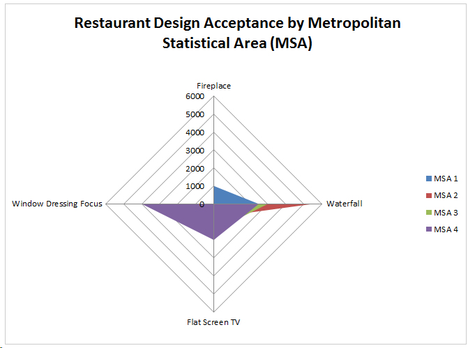
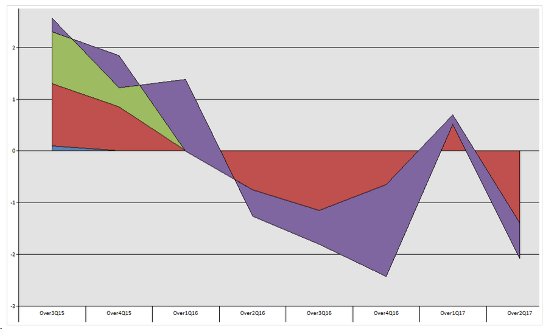

ISSUE: This international retail business had a painful manual process of copying
and pasting data from web sites to build reports. Z-AppXpert customized the marketing
and financial reports to deliver real time reporting to the corporate office.
They now use real-time market information to prepare bids and stay on top of the latest design trends.
User comment: I can't believe the number of hours that we would waste in gathering the necessary data to
stay on top of industry trends. Z-AppXpert designed a data-scraping tool and text analyzer to consolidate
and roll-up the data into a customized automated report. No commercial-off-the-shelf product can match this
tool . . . thank you Z-AppXpert.
Executive Summary: This business needed an Expert System to apply a complex set of Business Rules to Commercial
Property Interior Design Trends. Bidding a job to assure profitability is key to its survival.
Z-AppXpert customized a Data Scraping Tool, Text Analyzer, and Bid Generator to help this business make
intelligent decisions about the future of its business.
The figure below is a view for the toolbar of the Customized Expert System
The figure below is a report summarizing information for a restaurant design bid

In the report above. The Z-AppXpert Text Analyzer and Word Cluster Analysis Tool revealed that Window Dressing and Flat Screen
TV Design concepts an acceptance in the MSA 4 delineation. Acceptances of Fireplaces are prevalent in the
MSA 1 delineation. Additionally, the analysis shows a willingness to pay a higher amount in MSA 2 and MSA
3 for the Waterfall and Flat Screen TV concept.
Industry: International Manufacturing
ISSUE: The international project management team of a manufacturing company needs to manage resource
allocation of projects. Their reporting needs to summarize manufacturing project information, market
competitor information, inventory management information, and human resource allocation. They need an
Expert System to determine discrepancies in the resource load and resource leveling process.
User comment: Z-AppXpert did not bury us in endless Requirement Gathering. They were flexible and designed
very quickly . . . it was like they could read our minds . . . . Z-AppXpert easily saved us 100's of thousands
of dollars in consulting fees and headaches . . . The result is an easy to use interface allowing us to
foresee trouble spots in our manufacturing process.
Executive Summary: Z-AppXpert consolidated different department reports and data into a type of Hybrid Client
/ Cloud Based Expert System to foresee the GAPs in the Manufacturing Process. One of the biggest issues facing
this Specialty Manufacturing process was assuring the proper types of skills were available during the intricate
manufacturing process. The Final Result allowed Management to allocate Resources to the variety of Manufacturing
Projects in a timely and efficient manner.
The figure below is a view for the toolbar of the Customized Expert System
The figure below is a report summarizing over and under allocation information for manufacturing processes

The above chart rolls up 100s of details to include Skill Sets, Inventory Availability,
Logistics, Failure Analysis, Competition and numerous other Economic Factors. Note how
the chart quickly shows the under and over allocation time period of projects to management.